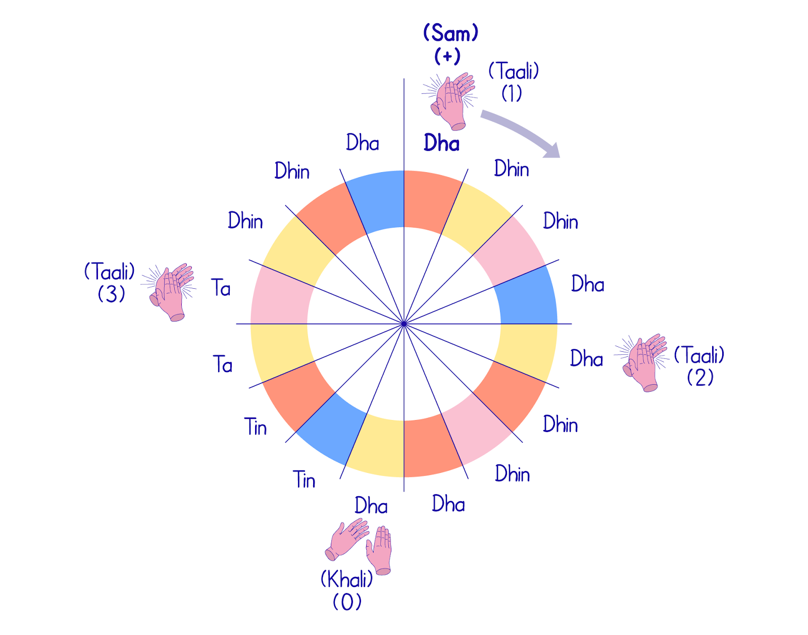

16 Beat Cycle
The above example of teen Taal is divided into 4 Vibhaag. Each Vibhaag is separated with the help of a vertical line or Purna Viram in Hindi.
Also one of the most popular cycles, teentaan's divisibility of 4,3,2 and 6 makes it a simple but effective beat to learn composiitons on as well as practice alankaars.